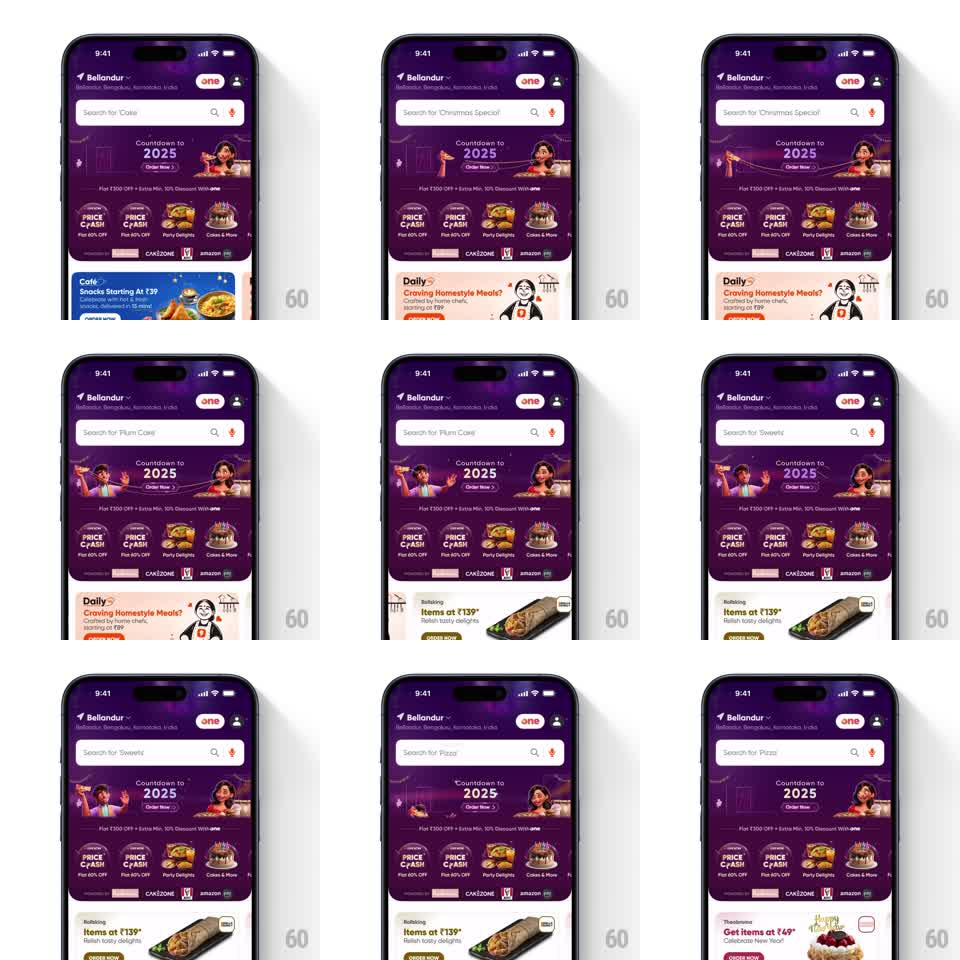

Media
Frame-by-frame

Rebuild this animation 1:1: Swiggy's countdown home - the festive purple banner animates behind the header while the search placeholder cycles dishes and the bottom promo card swaps on a loop.

Rebuild this animation 1:1: Swiggy's countdown home - the festive purple banner animates behind the header while the search placeholder cycles dishes and the bottom promo card swaps on a loop.
## Integration
Integration: stack-agnostic spec - springs given as stiffness/damping, timed motions as duration + curve; map every value to your framework and animation library of choice.
## Scene
Swiggy home in New Year dress: location header, search bar, a purple "Countdown to 2025 - Order Now" banner with celebrating characters and fireworks, a circular category row (Price Crunch, Party Delights, Cakes and More) with brand logos, and a promo card carousel at the bottom (Cafe snacks, Daily homestyle meals, Rolking wraps).
## Motion spec
Pattern: layered ambient loops, continuous.
- The banner animates on loop: fireworks burst and fade in the background (every ~700ms), the characters bob (1.4s alternate), and the "2025" shimmers (2.5s sweep).
- The search placeholder cycles through dishes ("Cake", "Christmas Special", "Plum Cake", "Sweets", "Pizza") with a vertical slide swap every ~2.5s: current word slides up and out (250ms ease-in), next slides in from below (250ms ease-out).
- The bottom promo card auto-advances every ~4s: the current card slides left and fades (300ms), the next slides in from the right (300ms, ease-out), each card carrying its own brand colors and food photo.
- All three loops run independently and never restart each other.
## Calibration
- Each loop keeps its own clock - syncing them reads as choreographed, and this screen is ambient.
- The promo card swap is a full slide, not a crossfade; the carousel direction is always leftward.
## Reduced motion
Static banner; placeholder and cards crossfade.
## Don't miss
- The category row and brand logos stay perfectly still - the motion lives in the banner, placeholder, and bottom card only.
- The placeholder word is quoted inside "Search for '...'"; the quotes and mic icon never move.